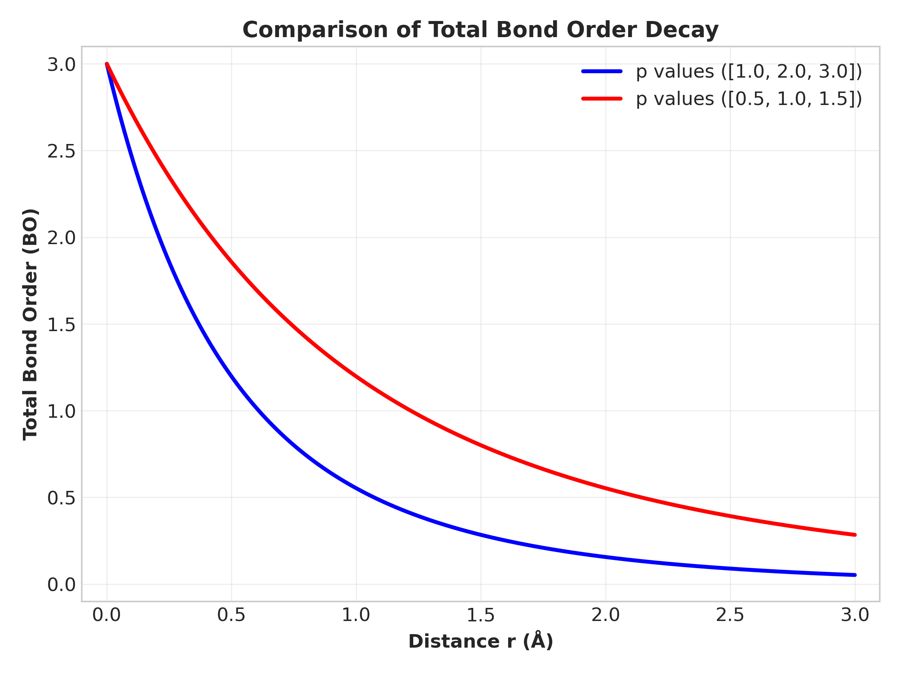

Reactive Force Field (ReaxFF)
Understanding ReaxFF
In many molecular dynamics simulations, atoms interact through predefined potentials such as Lennard–Jones or Morse. These models assume that the bonding structure between atoms does not change.
However, many physical and chemical processes involve chemical reactions, where bonds continuously break and form. Examples include combustion, catalysis, battery chemistry etc.
The Reactive Force Field (ReaxFF) was developed to simulate such systems. It allows atoms to dynamically create and destroy bonds during the simulation, making it suitable for modeling realistic chemical processes.
Bond Order Concept
The central idea of ReaxFF is the bond order. Instead of defining fixed bonds between atoms, the strength of a bond depends continuously on the interatomic distance.
A simplified expression for bond order is
\[ BO_{ij} = e^{-p_1 r_{ij}} + e^{-p_2 r_{ij}} + e^{-p_3 r_{ij}} \]Here, \( r_{ij} \) is the distance between atoms \(i\) and \(j\), while \(p_1\), \(p_2\), and \(p_3\) are parameters fitted to quantum chemistry calculations. Since BO has no unit, so unit of p is \(\AA^{-1}\).
When atoms move closer together, the bond order increases, representing bond formation. When atoms move apart, the bond order decreases, eventually leading to bond breaking.

From the graph, we can clearly see that bond formation happens gradually, no sharp peak.
Total Energy in ReaxFF
In ReaxFF, the total energy of the system is written as the sum of several interaction energies. Each term represents a different physical effect between atoms.
\[ E_{\text{system}} = E_{\text{bond}} + E_{\text{angle}} + E_{\text{torsion}} + E_{\text{vdWaals}} + E_{\text{Coulomb}} \]Bond Energy (\(E_{\text{bond}}\))
This term describes bond formation and bond breaking. In ReaxFF, bond energy depends nonlinearly on bond order, allowing smooth formation and dissociation of chemical bonds.
\[ E_{\text{bond}} = - D_e \, BO_{ij} \exp\left[ p_{be1}\left(1 - BO_{ij}^{p_{be2}}\right) \right] \]Here, \(D_e\) is the bond dissociation energy, representing the strength of the bond. Larger \(D_e\) means a stronger bond and higher energy required for dissociation. Its unit is usually eV.
\(BO_{ij}\) is the bond order between atoms \(i\) and \(j\), which varies continuously with distance. The parameters \(p_{be1}\) and \(p_{be2}\) control how sharply the bond energy changes as the bond is stretched or broken.
Angle Energy (\(E_{\text{angle}}\))
This term keeps proper geometric angles between bonded atoms. It becomes important for maintaining molecular shape and stability.
\[ E_{\text{angle}} = k_\theta (\theta - \theta_0)^2 \]Here, \(k_\theta\) is the angle force constant, which determines how strongly the system resists angle deformation. Larger \(k_\theta\) means the angle is harder to distort. Its unit is usually eV/rad\(^2\).
\(\theta\) is the instantaneous bond angle formed by three atoms during the simulation, while \(\theta_0\) is the equilibrium or preferred bond angle. The quantity \((\theta - \theta_0)\) measures angular deviation from equilibrium.
Here, \(k_{\theta}\) and \(\theta_0\) are the constants need to provide in the input script.
Torsion Energy (\(E_{\text{tors}}\))
Torsion energy describes rotational motion around chemical bonds. It becomes important in chain molecules, polymers, and molecular twisting processes.
\[ E_{\text{tors}} = \frac{1}{2} V_1(1+\cos\phi) + \frac{1}{2} V_2(1-\cos2\phi) + \frac{1}{2} V_3(1+\cos3\phi) \]Here, \(V_1\), \(V_2\), and \(V_3\) are torsional barrier coefficients. They represent the energy required for rotational twisting around a bond. Larger values mean stronger resistance to rotation. Their unit is usually eV.
\(\phi\) is the dihedral or torsion angle formed by four connected atoms. The cosine terms create repeating energy minima during bond rotation.
In ReaxFF, torsion energy also depends on bond order. If bonds weaken or break, the torsion interaction naturally disappears.
van der Waals Energy (\(E_{\text{vdW}}\))
In ReaxFF, the van der Waals interaction describes weak nonbonded attraction and strong short-range repulsion between atoms. Unlike the classical Lennard-Jones potential, ReaxFF uses a shielded exponential form to avoid unphysical singularities at very small distances.
\[ E_{\text{vdW}} = D_{ij} \left[ \exp\left( \alpha\left(1-\frac{r}{r_{vdW}}\right) \right) - 2\exp\left( \frac{\alpha}{2}\left(1-\frac{r}{r_{vdW}}\right) \right) \right] \]Here, \(D_{ij}\) represents the depth of the van der Waals potential well. It controls the strength of attraction between two atoms. Larger \(D_{ij}\) means stronger intermolecular attraction. Its unit is usually eV.
\(r_{vdW}\) is the preferred van der Waals interaction distance between atoms. It determines the approximate equilibrium separation for nonbonded interaction. Its unit is usually \(\AA\).
\(\alpha\) controls how sharply the interaction changes with distance. Larger \(\alpha\) produces steeper short-range repulsion.
\(r\) is the distance between two atoms. When atoms are very close, the exponential repulsive term dominates strongly. At moderate distances, the attractive term becomes important.
These constants must be written inside the input file.
Coulomb Energy (\(E_{\text{Coulomb}}\))
This term represents electrostatic interaction between charged atoms. Positive and negative charges attract, while similar charges repel.
\[ E_{\text{Coulomb}} = \frac{1}{4\pi \epsilon_0} \cdot \frac{q_i q_j}{r_{ij}} \]Here, \(q_i\) and \(q_j\) are the charges of atoms \(i\) and \(j\). Their unit is usually the elementary charge unit.
\(\epsilon_0\) is the permittivity of free space, which determines the strength of electrostatic interaction in vacuum.
\(r_{ij}\) is the distance between the charged atoms. Smaller distance produces stronger electrostatic interaction. Opposite charges give negative energy (attraction), while similar charges give positive energy (repulsion).
\(\epsilon_0\) , \(q_i\) and \(q_j\) are need to be present in the input script.
From Energy to Trajectory
Once the total energy is known, forces on atoms are calculated from the energy gradient.
\[ \vec{F}_i = -\nabla_i E \]Using Newton’s second law, acceleration, velocity, and position are updated at every timestep.
\[ m_i \vec{a}_i = \vec{F}_i \]Repeating this process over many timesteps generates the atomic trajectory, which describes how atoms move in time during the simulation.